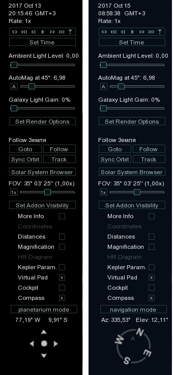
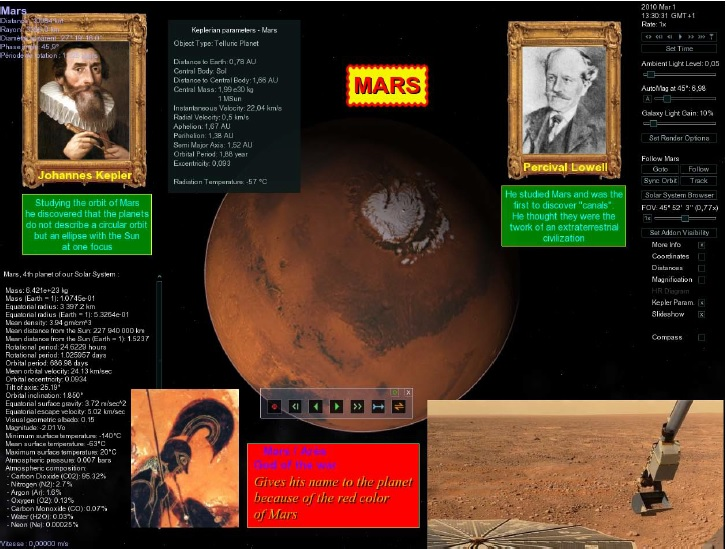

Lua Edu Tools v1.2 by Vincent Giangiulio and Hank Ramsey

LUA Edu Tools was developed primarily for use in educational institutions (schools, university institutes) and aimed to facilitate the user's work with the Celestia program. At the same time it was a tool that can be used to quickly organize cognitive lessons on a subject of astronomy. Over time, this addition to Celestia has rapidly gained popularity among traditional ordinary users because it has given the program additional features that were not available in the official version.
Then Lua Edu Tools has been translated into several languages and we recommend its use to all users of the Celestia program.
So what are the tools of LUA Edu Tools today.
This supplement is a graphical interface for the management of the Celestia program which consists of the following elements:
- Setting the date/time, setting the time (acceleration, deceleration)
- catalogue of the Solar system with classification of objects by type (planets, satellites, asteroids, etc.)
- Setting the ambient light
- Setting the brightness of galaxies
- Navigation buttons
- Setting display options
- adjustment of the FOV (focal length)
- asteroids Belt Display
- extension bar (optional modules)
- decorative panel with text of information
- decorative panel with picture
- planetarium/Navigation mode
- navigation buttons and additional motion controls
- zoom function (designed for educational purposes and displaying the solar system on another scale)
- distance Markers:
- Square marker of the distance, located in the observation plane of the center of the screen
- A circular distance marker, located in the orbital plane (ecliptic plane) relative to the selected object.
- Compass Display: (You can change its position on the screen by clicking on the mouse):
- Longitude/latitude or azimuth (response to mouse)
- Toggle the Planetarium/navigation modes.
And that is not a limit. LUA Edu Tools allows you to extend and add new features and commands. For teachers, there are great opportunities to create an entertaining astronomy and exciting travels in the Celestia simulator. For the enthusiasts of science fiction and video game, it is also possible to allow the display of cockpits, imitation of the dashboard of NASA Space Shuttle (or others) with a view through to the Avantpar the porthole. This creates a special atmosphere of being aboard the spacecraft and gives the user a memorable experience of traveling through the universe of Celestia.
Slideshow by Jogad

SLIDESHOW lets you make sophisticated presentations in Celestia. You can enhance the screens of Celestia incorporating text and images that you can format at will. A slideshow is a collection of views (slides) that can each store a position in Celestia (Cel: / / URL) along with images and text. And more, each slide can also embed files like multimedia files (audio or video), text or PDF documents, Internet links or even command scripts Celestia. Slideshow is now supplied with fonts for varying the size and shape of text and enhance the appearance of the slides. You can define as many slideshows as you wish. Each slideshow can contain as many slides as needed.
SLIDESHOW can easily navigate among the slides and also to scroll automatically with an adjustable interval of time. All this is done directly without programming SLIDESHOW or write a single script..
Download
Apollo cockpits
 This package contains some overlay textures from the Apollo missions by MiR:
This package contains some overlay textures from the Apollo missions by MiR:
- cockpit_apollo11.png
- cockpit_Apollo11_wide.png
- cockpit_luke.png
- cockpit_luna_lander.png
- cockpit_luna_lander_wide.png
Please note that this add-on will work with the Lua Edu Tools 1.2 or Lua Universal Tools only!
Download